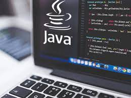
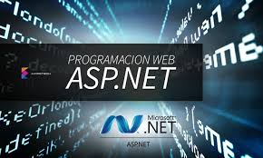
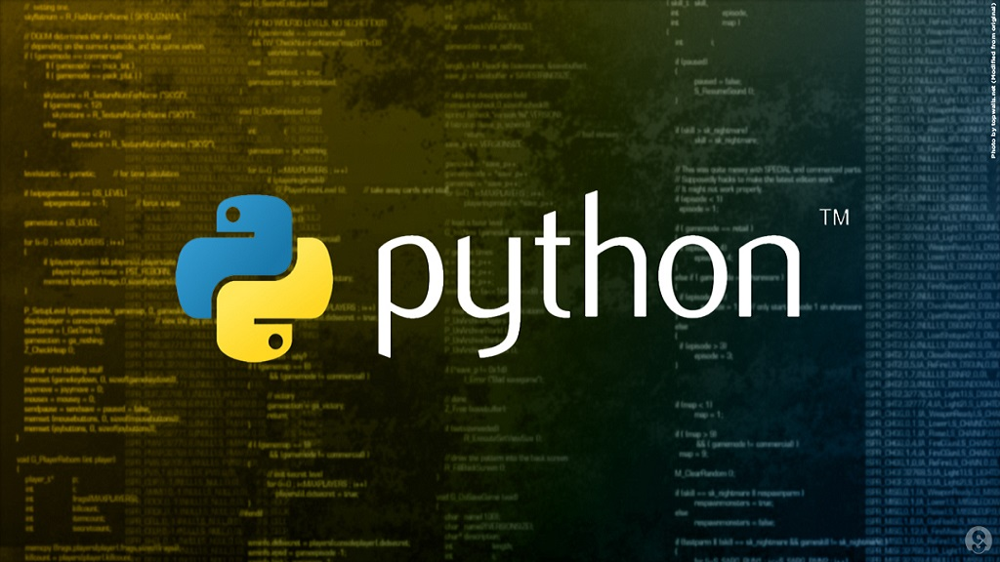
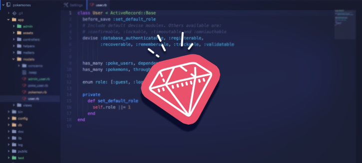
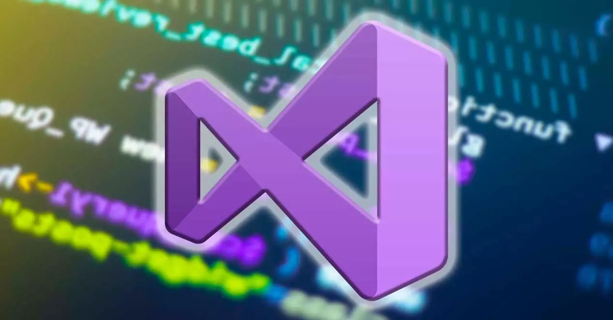

La programación es un proceso de crear una instruccion que le dice a una computadora como realizar algún tipo de tarea. Pero no solo la acción de escribir un código para que la computadora o el software lo ejecute. Incluye, además, todas las tareas necesarias para que el código funcione correctamente y cumpla el objetivo para el cual se escribió.
En la actualidad, la noción de programación se encuentra muy asociada a la creación de aplicaciones de informática y videojuegos. En este sentido, es el proceso por el cual una persona desarrolla un programa, valiéndose de una herramienta que le permita escribir el código (el cual puede estar en uno o varios lenguajes, como C++, Java y Python, entre muchos otros) y de otra que sea capaz de “traducirlo” a lo que se conoce como lenguaje de máquina, que puede "comprender" el microprocesador.
Funcionamiento de un programa
Para crear un programa y que la computadora lo interprete y ejecute, las instrucciones deben escribirse en un lenguaje de programación.
El lenguaje entendido por una computadora se conoce como código máquina. Consiste en secuencias de instrucciones básicas que el procesador reconoce, codificadas como cadenas de números 1 y 0 (sistema binario "a ver estudiado"). En los primeros tiempos de la computación se programaba directamente en código máquina. Escribir programas así resultaba demasiado complicado, también era difícil entenderlos y mantenerlos una vez escritos. Con el tiempo, se fueron desarrollando herramientas para facilitar el trabajo.
Una vez que se termina de escribir un programa, es necesario de alguna forma traducirlo a lenguaje máquina, que es lo único que entiende el procesador. Esta tarea es por medio de un programa adicional que toma el código escrito y lo procesa. Se llama compilación: el programa toma el código en un lenguaje y genera código en el otro; al programa traductor se lo llama compilador. En general se habla de compilación y compiladores cuando el lenguaje de origen es de alto nivel; Generalmente existe una fase posterior a la compilación denominada enlace o enlazado (linking en inglés). Los programas pueden escribirse en partes separadas y además pueden usar recursos provistos por bibliotecas. Estos se interlazan y asi genera un programa ejectuable completo.
Objetivos de la programacion
La programación debe perseguir la obtención de programas de calidad. Para ello se establece una serie de factores que determinan la calidad de un programa. Algunos de los factores de calidad más importantes son los siguientes:
Correcto: Un programa es correcto si hace lo que debe hacer tal y como se estableció en las fases previas a su desarrollo. Para determinar si un programa hace lo que debe, es muy importante especificar claramente qué debe hacer el programa antes de su desarrollo y, una vez acabado, compararlo con lo que realmente hace. Al verificar este comportamiento está cumpliendo dicho objetivo.
Claridad: Es muy importante que el programa sea lo más claro y legible posible, para facilitar tanto su desarrollo como su posterior mantenimiento. Al elaborar un programa se debe intentar que su estructura sea sencilla y coherente, así como cuidar el estilo de programación. De esta forma se ve facilitado el trabajo del programador, tanto en la fase de creación como en las fases posteriores de corrección de errores, ampliaciones, modificaciones, etc. Fases que pueden ser realizadas incluso por otro programador, con lo cual la claridad es aún más necesaria para que otros puedan continuar el trabajo fácilmente.
Eficiencia: Se trata de que el programa, además de realizar aquello para lo que fue creado (es decir, que sea correcto), lo haga gestionando de la mejor forma posible los recursos que utiliza. Normalmente, al hablar de eficiencia de un programa, se suele hacer referencia al tiempo que tarda en realizar la tarea para la que ha sido creado y a la cantidad de memoria que necesita, pero hay otros recursos que también pueden ser de consideración para mejorar la eficiencia de un programa, dependiendo de su naturaleza (espacio en disco que utiliza, tráfico en la red que genera, etc.).
Portabilidad: Un programa es portable cuando tiene la capacidad de poder ejecutarse en una plataforma, ya sea hardware o software, diferente a aquella en la que se desarrolló. La portabilidad es una característica muy deseable para un programa, ya que permite, por ejemplo, un programa que se ha elaborado para el sistema GNU/Linux también pueda ejecutarse en el sistema operativo Windows. Consecuentemente el programa puede llegar a más usuarios.
Tipos de lenguaje de Programacion
Java

Java es un lenguaje de programación y una plataforma informática comercializada por primera vez en 1995 por Sun Microsystems. Hay muchas aplicaciones y sitios web que no funcionarán a menos que tenga Java instalado y cada día se crean más. Java es rápido, seguro y fiable. Desde portátiles hasta centros de datos, desde consolas para juegos hasta súper computadoras, desde teléfonos móviles hasta Internet, Java está en todas partes.
.Net

Se trata de una plataforma para el desarrollo de software que fue lanzada por Microsoft con la finalidad de fusionar su amplio catálogo de productos, que va desde sus múltiples sistemas operativos hasta herramientas de desarrollo. Desde un punto de vista tecnológico, lo que se pretendía con la creación de .NET era poder desarrollar aplicaciones y sistemas que fueran independientes de la arquitectura física y del sistema operativo sobre el que se ejecutaran.
Python

En términos técnicos, Python es un lenguaje de programación de alto nivel, orientado a objetos, con una semántica dinámica integrada, principalmente para el desarrollo web y de aplicaciones informáticas.
Es muy atractivo en el campo del Desarrollo Rápido de Aplicaciones (RAD) porque ofrece tipificación dinámica y opciones de encuadernación dinámicas.
JavaScript
JavaScript es un lenguaje de programación que te permite implementar funciones complejas en páginas web, cada vez que una página web hace algo más que mostrar información estática para que la veas, muestra oportunas actualizaciones de contenido, mapas interactivos, animación de Gráficos 2D/3D, desplazamiento de máquinas reproductoras de vídeo, etc., puedes apostar que probablemente JavaScript está involucrado
Go
Go es un lenguaje de programación concurrente y compilado, desarrollado por los ingenieros de Google. Go vio la luz en el año 2009, esto hace a Go un lenguaje relativamente nuevo, pero que esto no nos engañe, Go es un lenguaje maduro, con el cual se han desarrollado miles de proyectos alrededor del mundo, inclusive, versiones actuales de Go están escritas con el mismo Go
Ruby

Este es un lenguaje de programación, que está principalmente orientado a objetos pero también puede ser programación funcional, por ejemplo. Este lenguaje de programación open-source se inspiró en lenguajes como Perl, Eiffel y LISP.
Estar orientado a objetivos significa que el lenguaje de programación Ruby funciona con datos que el usuario creará en función de sus propias necesidades. Los objetos son formas de representar objetos de la vida real dentro del software.
C++
C++ es un lenguaje de programación orientado a objetos muy potente que evolucionó de la extensión de lenguaje informático “C” y que hoy en día sigue usándose para realizar programación estructurada de alto nivel y rendimiento, como sistemas operativos, videojuegos y aplicaciones en la nube.
SQL
Es un tipo de lenguaje de programación que te permite manipular y descargar datos de una base de datos. Tiene capacidad de hacer cálculos avanzados y álgebra. Es utilizado en la mayoría de empresas que almacenan datos en una base de datos. Ha sido y sigue siendo el lenguaje de programación más usado para bases de datos relacionales.
Visual Basic

Es un lenguaje de programación de alto nivel, que puede ser tanto interpretado como compilado, no estructurado, y de fácil aprendizaje.Con la aparición y posterior explosión de los entornos gráficos, se requerían herramientas de desarrollo que pudieran explotar todo el potencial de dichos entornos, a la par que aprovecharan el mismo para facilitar la tarea de programación.
Recomendanciones
Una de las mayores recomendaciones que se les pueda dar a las personas que estan iniciando en el mundo de la programacion, tiene que ver mayormente con que tienen que iniciar con un enfoque y un objetivo,
¿Que quiero decir con esto?. Facil primero que nada tenes que estudiar y saber para que sirven los diferentes lenguajes de programacion que existen, teniendo eso en cuenta toma accion y ve descartando aquellos los cuales no te llaman mucho la atencion o no te interesa las cosas que podrias hacer con ellos. En la anterior seccion te deje 9 lenguajes de programacion con toda la informacion referente a ellos.
Por eso es importante que leas todos y cada uno para que asi tomes una decision por que caminar elegir. Ya que el aprender cada lenguaje de programacion con lleva una gran cantidad de tiempo, esfuerzo y dedicacion. Por lo cual si por una mala eleccion o impaciencia elegis uno el cual no te termina de gusta. Abras malgastado tu tiempo y tu esfuerzo
Una vez que te has informado de los diferentes lenguajes de programacion que existen
comienza la etapa del aprendizaje la cual es la mas bonita pero al mismo tiempo la mas frustrante en cuanto a todo el contenido que tienes que abarcar.
Mi recomendacion, para iniciarte en ese lenguaje y en ese mundo seria que vieras un par de tutoriales en youtube, una vez visto y que estes completamente seguro de que te gusta ese lenguaje y las cosas que viste. Inscribite en curso pequeño donde podras obtener mas informacion referente al mismo. Y lo veras desde la perspectiva de una persona que ya es experta en dicho lenguaje.
En el menu del inicio de la pagina tienes una seccion donde te dejare diferentes paginas a donde podras realizar dichos cursos. Para mi gusto y recomendacion una de las mejores seria EducacionIT donde tendras el contenido de por vida y ¡con profesionales altamente capacitados para enseñarte con las mejores practicas que existen!.